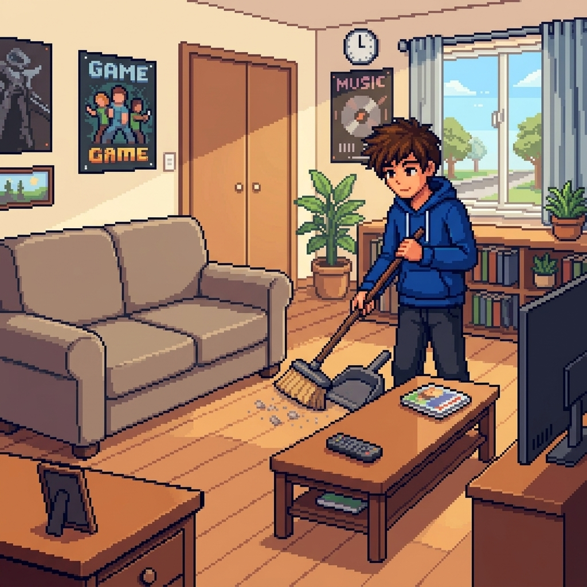

Guia Digital de Hábtios Saudáveis para Estudantes
Este site é um guia para você, estudante que está lendo isso possa aprender a ter hábitos bons para o seu aprendizado e crescimento de forma saudavel.


O Poder dos Bons Hábitos
A sua rotina atual é o rascunho do seu futuro profissional. Estudar muito na véspera de uma prova pode até te dar uma nota média, mas são os hábitos diários que constroem o aprendizado real, reduzem a ansiedade e abrem portas para grandes oportunidades.
Bons hábitos são a engrenagem oculta do sucesso acadêmico. Mais do que tirar notas altas, cultivar uma rotina equilibrada transforma a jornada estudantil em um processo mais leve, produtivo e saudável. Quando você domina seus hábitos, você assume o controle do seu futuro.
Entendendo a Curva do Esquecimento e a Revisão Espaçada
O maior inimigo do estudante não é a falta de inteligência, mas o esquecimento natural do cérebro. Poucas horas após assistir a uma aula ou ler um capítulo, nosso cérebro descarta a maior parte das informações se não as considerar úteis. Esse fenômeno científico é conhecido como a Curva do Esquecimento, que demonstra que perdemos até 70% do que aprendemos em apenas 24 horas
Para combater esse mecanismo e fixar o conhecimento na memória de longo prazo, a estratégia mais eficaz é a Revisão Espaçada. Em vez de passar horas estudando o mesmo assunto em um único dia, o estudante deve revisar o conteúdo em intervalos de tempo cada vez maiores. Isso força o cérebro a resgatar a informação no momento exato em que ele começaria a esquecê-la.
Veja algumas dicas essênciais para o seu dia a dia
Veja isso, vai que você acha o que quer.
Jogue agora esse simples jogo
Recomendamos que olhe o site para que possa ter um bom resultado
 Clique aqui para jogar
Clique aqui para jogar